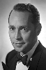
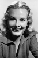
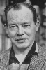

Country:United States, 70 minutes
Spoken languages:
Genres:Drama, Mystery, Thriller
Director(s):Fletcher Markle
Writer(s):Fletcher Markle, Vincent McConnor
Video Codec:Unknown
Number: 1754


Certification:
Storyline:
New York Assistant District Attorney Howard Malloy is working hard on investigation about a series of murders related to an extremist group.
Cast:   


Medium: Original DVD,
Comments: Part of: Mystery Classics - 50 Movie Pack
Loaned: No
Aspect ratio: Unknown